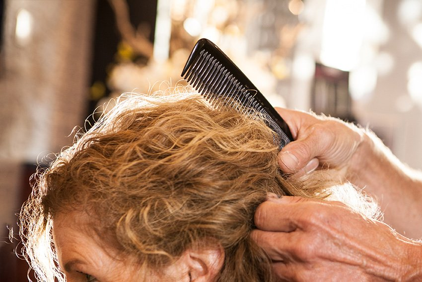
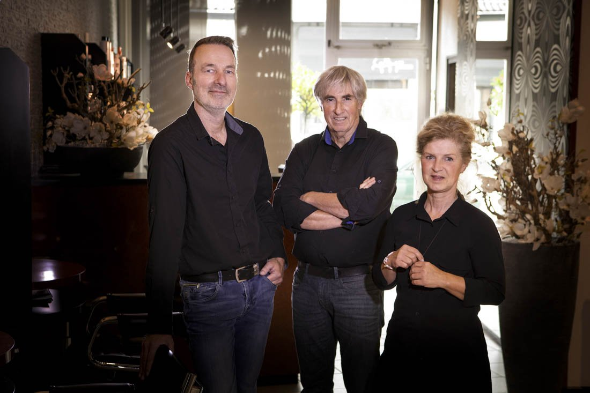

Over ons
Waar u nooit tevergeefs aanklopt
Kapsalon John de Kort Coiffures is een zaak met een lange historie, begonnen in 1948 en in de huidige vormgeving sinds 1974.
Een kapsalon waar uw wensen met vakmanschap worden verwezenlijkt. U treft een fijne en gemoedelijke sfeer aan en u stapt graag weer binnen voor de volgende behandeling. U bent ook zomaar hartelijk welkom.


In de salon
Vakmanschap en een gemoedelijke sfeer maken een bezoek aan de salon bijzonder. Loop gerust binnen of maak vooraf een afspraak.